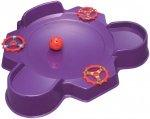

Super Control Beyblade-Exclusive Stadium
| Super Control Beyblade-Exclusive Stadium | |
|  | |
| Number: | BBC-03 |
|---|---|
| System: | Super Control Beyblade |
Dimensions
Play Area Diameter: 31 cm
Tornado Ridge Diameter: 24.9 cm
Wall Length: 15.2 cm (1 Wall) + 13.7 cm (2 Ramp Areas)
Exit Length: 16.4 cm (Between Ramp Area and Wall) + 17.1 cm (Between 2 Ramp Areas)
Depth: 3.2 cm
Slope: ~30°
Available Products
- BBC-03 Super Control Beyblade-Exclusive Stadium (Purple)
- SonoKong Ultimate DX Set (Black)
Gallery
Overall
The Super Control Beyblade-Exclusive Stadium was originally released as part of TAKARA-TOMY's BBC Super Control Beys' line. It comes with 3 plastic circular wheels and 1 plastic ball as part of its original Super Control gimmick. A set of carton shield pieces is also included as a form of safety protection. The Stadium features 1 Wall, 2 Ramp Areas, a Tornado Ridge, and an undisturbed center.
For Remote Control play, the 3 plastic circular wheels are to be attached onto the slots provided near the edge, while the plastic ball is to be left on the center play area. In the game, knocking out the plastic ball and the circular wheels gives the player a certain number of points respectively, which lead to a win.
Stripped away from its intended purpose as the official stadium for Remote Control Beyblades, the Super Control Beyblade-Exclusive Stadium surprisingly provides a balanced performance for the main Beyblade line. It allows Attack Types to perform a nice flower pattern and lets them stall due to the Tornado Ridge; Stamina Types are moreover undisturbed by Stadium gimmicks; and Defense types are given a good Wall-Exit ratio. Ironically, despite its original purpose, the Super Control Beyblade-Exclusive Stadium is regarded as one of the fairest Stadiums for MFB.
When compared to the BeyStadium Attack Type (MFB), the Tornado Ridge is slightly deeper, thus allowing more speed when riding the ridge, and consequently, it creates better flower patterns. The slope on the Ramp Areas is deep enough to force the beys to come down to the center within 1-2 seconds. The Walls on these Ramp Areas are lower than the BeyStadium Attack Type's, thus making up the extra distance the Beyblade needs to travel and jump over the wall for a Knock Out.
Given the close similarity of the Super Control Beystadium to the BeyStadium Attack Type's dimension- and design-wise, all combinations perform practically identical in both. You can therefore refer to the Top Tier list of Competitive Combinations to learn what does well in this Stadium.
The higher cost of the Super Control Beyblade-Exclusive Stadium compared to the BeyStadium Attack Type, combined with its limited availability, dampens its popularity, despite the fair metagame it provides. The BeyStadium Super Control should consequently only be purchased as an alternative to the BeyStadium Attack Type.